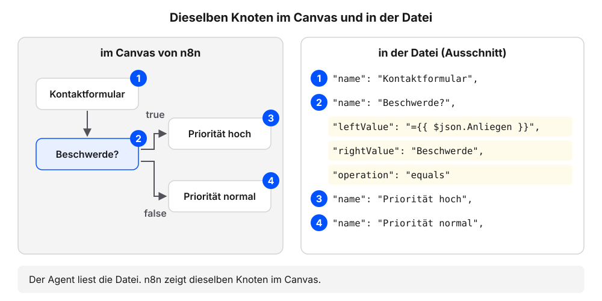
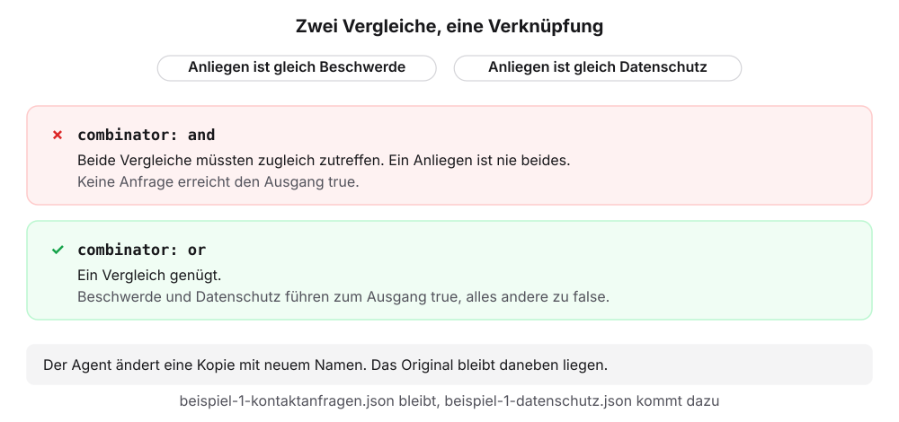
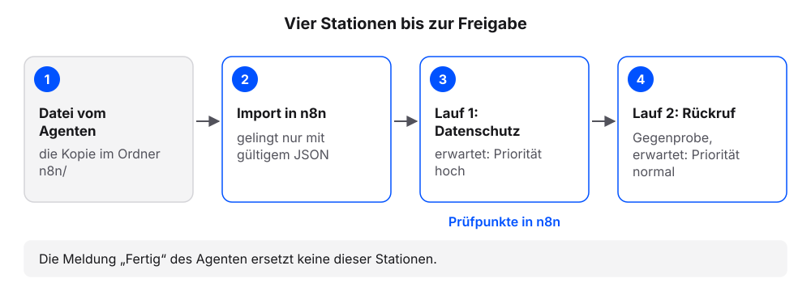
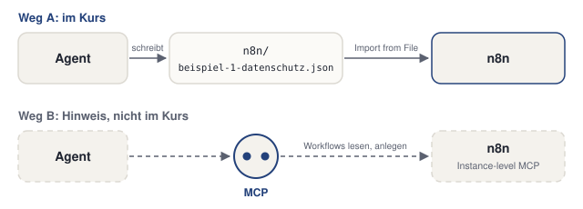
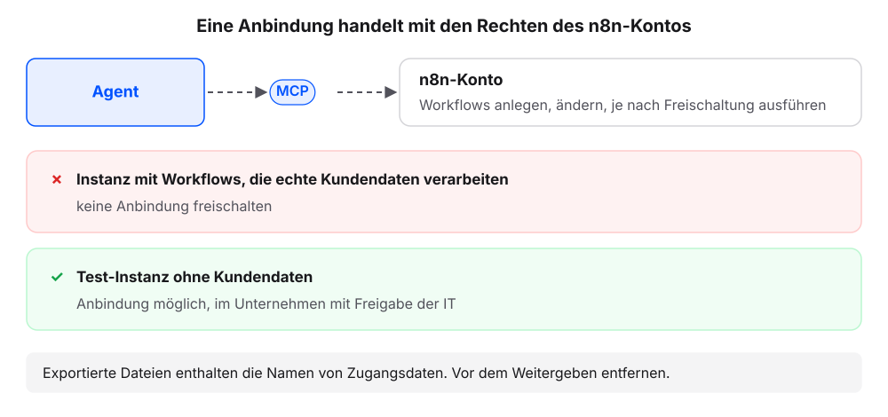

20 n8n mit dem Agenten
Jeder n8n-Workflow lässt sich als Datei speichern, und für den Agenten ist diese Datei Text wie jede Anfrage im Projektordner. Der eigene Agent erklärt den Workflow aus Beispiel 1: Kontaktanfragen sortieren und ändert ihn als Kopie. Danach testen wir die Kopie in n8n. Die Kopie soll eine dritte Art von Anfragen mit hoher Priorität behandeln: Datenschutzanfragen. Die Erklärung folgt jeweils am eigenen Ergebnis.
Jeder Schritt hat denselben Aufbau: ein Auftrag zum Kopieren, ein Kasten „Das sollten wir jetzt sehen“, eine kurze Erklärung und ein Abschnitt „Wenn es anders aussieht“.
20.1 Schritt 1: Workflow-Datei ablegen und erklären lassen
Voraussetzung: Der eigene Projektordner (Beispielfall: kundenanfragen) ist in der App des Agenten gewählt, mit dem Stand nach dem Kapitel Voraussetzung: Ihre Arbeitsumgebung.
Diesen Auftrag senden:
Lege in diesem Ordner den Ordner n8n an. Frage, bevor du ihn anlegst.Die Datei beispiel-1-kontaktanfragen.json herunterladen (im Browser: rechte Maustaste, „Link speichern unter“).
Die Datei im Finder oder Explorer im Ordner
n8n/des Projektordners speichern (Beispielfall:kundenanfragen/n8n/).Diese Frage senden:
Liste die Dateien im Ordner n8n auf.Prüfen: Die Liste nennt
beispiel-1-kontaktanfragen.json.Diesen Auftrag senden:
Erkläre den Workflow in n8n/beispiel-1-kontaktanfragen.json in drei Sätzen: Auslöser, Entscheidung, Ergebnis. Ändere danach nichts.Prüfen: Die Erklärung nennt das Formular, den If-Knoten „Beschwerde?“ und zwei Ausgänge.
Statt Schritt 1 bis 3 kann der Agent die Datei selbst anlegen. Der Auftrag enthält den vollständigen Inhalt der Datei aus Beispiel 1; auf der Lernplattform ist er der Hauptweg.
Lege den Ordner n8n an und darin die Datei beispiel-1-kontaktanfragen.json. Übernimm den Text zwischen BEGINN und ENDE wörtlich, ohne etwas zu ändern. Frage, bevor du etwas anlegst.
=== BEGINN ===
{
"name": "Beispiel 1 · Kontaktanfragen sortieren",
"nodes": [
{
"parameters": {
"formTitle": "Kontakt",
"formDescription": "Wir melden uns innerhalb eines Werktags.",
"formFields": {
"values": [
{
"fieldLabel": "Name",
"requiredField": true
},
{
"fieldLabel": "E-Mail",
"fieldType": "email",
"requiredField": true
},
{
"fieldLabel": "Anliegen",
"fieldType": "dropdown",
"fieldOptions": {
"values": [
{
"option": "Frage zur Bestellung"
},
{
"option": "Beschwerde"
},
{
"option": "Rückruf"
}
]
},
"requiredField": true
},
{
"fieldLabel": "Nachricht",
"fieldType": "textarea"
}
]
},
"options": {}
},
"id": "form",
"name": "Kontaktformular",
"type": "n8n-nodes-base.formTrigger",
"typeVersion": 2.2,
"position": [
0,
0
],
"webhookId": "e0160819-96b1-5a28-9571-24dd6a26c008"
},
{
"parameters": {
"conditions": {
"options": {
"caseSensitive": true,
"leftValue": "",
"typeValidation": "strict",
"version": 2
},
"conditions": [
{
"id": "if-c1",
"leftValue": "={{ $json.Anliegen }}",
"rightValue": "Beschwerde",
"operator": {
"type": "string",
"operation": "equals"
}
}
],
"combinator": "and"
},
"options": {}
},
"id": "if",
"name": "Beschwerde?",
"type": "n8n-nodes-base.if",
"typeVersion": 2.2,
"position": [
260,
0
]
},
{
"parameters": {
"assignments": {
"assignments": [
{
"id": "h1",
"name": "name",
"value": "={{ $json.Name }}",
"type": "string"
},
{
"id": "h2",
"name": "email",
"value": "={{ $json['E-Mail'] }}",
"type": "string"
},
{
"id": "h3",
"name": "anliegen",
"value": "={{ $json.Anliegen }}",
"type": "string"
},
{
"id": "h4",
"name": "prioritaet",
"value": "hoch",
"type": "string"
}
]
},
"options": {}
},
"id": "hoch",
"name": "Priorität hoch",
"type": "n8n-nodes-base.set",
"typeVersion": 3.4,
"position": [
520,
-100
]
},
{
"parameters": {
"assignments": {
"assignments": [
{
"id": "n1",
"name": "name",
"value": "={{ $json.Name }}",
"type": "string"
},
{
"id": "n2",
"name": "email",
"value": "={{ $json['E-Mail'] }}",
"type": "string"
},
{
"id": "n3",
"name": "anliegen",
"value": "={{ $json.Anliegen }}",
"type": "string"
},
{
"id": "n4",
"name": "prioritaet",
"value": "normal",
"type": "string"
}
]
},
"options": {}
},
"id": "normal",
"name": "Priorität normal",
"type": "n8n-nodes-base.set",
"typeVersion": 3.4,
"position": [
520,
100
]
}
],
"connections": {
"Kontaktformular": {
"main": [
[
{
"node": "Beschwerde?",
"type": "main",
"index": 0
}
]
]
},
"Beschwerde?": {
"main": [
[
{
"node": "Priorität hoch",
"type": "main",
"index": 0
}
],
[
{
"node": "Priorität normal",
"type": "main",
"index": 0
}
]
]
}
},
"settings": {
"executionOrder": "v1"
},
"pinData": {}
}
=== ENDE ===Danach weiter mit Schritt 4.
20.1.1 Das sollten wir jetzt sehen
Auslöser: Das Formular „Kontaktformular“ startet den Workflow, wenn jemand Name, E-Mail, Anliegen und Nachricht absendet.
Entscheidung: Der If-Knoten „Beschwerde?“ prüft, ob das Anliegen gleich „Beschwerde“ ist.
Ergebnis: Beschwerden gehen an „Priorität hoch“, alle anderen Anfragen an „Priorität normal“. Beide Knoten setzen das Feld prioritaet.
Die Entscheidung steht in der Datei so (gekürzt):
"name": "Beschwerde?",
"conditions": [
{
"leftValue": "={{ $json.Anliegen }}",
"rightValue": "Beschwerde",
"operator": { "type": "string", "operation": "equals" }
}
],
"combinator": "and"Die Erklärung Ihres Agenten lautet anders. Wichtig sind Auslöser, Entscheidung und die zwei Ausgänge. Die hinterlegten Zeilen zeigen, woher er die Entscheidung kennt: aus der Bedingung im If-Knoten.
20.1.2 Was gerade passiert ist
Der Agent hat die Workflow-Datei gelesen wie jede Anfrage im Ordner. Die Namen in seiner Erklärung stehen wörtlich in der Datei.
Workflow-JSON nennen wir die Datei, in der n8n einen Workflow speichert. JSON (JavaScript Object Notation) ist ein Textformat, das Daten als Felder mit Namen und Wert in geschweiften Klammern ablegt. Die Datei enthält alle Knoten mit ihren Einstellungen und die Verbindungen zwischen ihnen. Jeder Workflow lässt sich über das Menü des Workflows als JSON-Datei exportieren und in eine andere Instanz wieder importieren. Die Knotennamen in der Datei sind dieselben wie im Canvas.

Die Bedingung ist der Vergleich im If-Knoten „Beschwerde?“. In der Datei sieht sie so aus (gekürzt):
"conditions": [
{
"leftValue": "={{ $json.Anliegen }}",
"rightValue": "Beschwerde",
"operator": { "type": "string", "operation": "equals" }
}
],
"combinator": "and"Die Zeilen lesen sich fast wie ein Satz. Links steht der Wert aus dem Formularfeld Anliegen, rechts der Vergleichswert Beschwerde, dazwischen der Vergleich „ist gleich“ (equals). Wie ein neuer Mitarbeiter liest der Agent zuerst den Ablaufplan und erklärt ihn, bevor er etwas ändert. Seine Erklärung lässt sich am Canvas in n8n prüfen.
- Der Agent kürzt die Datei oder ändert Zeilen beim Anlegen (Alternative oben): ablehnen und die Datei herunterladen.
- Die heruntergeladene Datei heißt
beispiel-1-kontaktanfragen.json.txtoder liegt noch im Download-Ordner: im Finder oder Explorer in den Ordnern8n/des Projektordners verschieben und die Endung.txtentfernen. - Die Erklärung nennt andere Namen als „Beschwerde?“ oder „Priorität hoch“: „Nenne die Knotennamen genau so, wie sie in der Datei stehen.“
- Der Agent schlägt von sich aus eine Änderung vor: ablehnen. Der Auftrag lautet „Ändere danach nichts“.
20.2 Schritt 2: Eine geänderte Kopie anlegen lassen
Aus dem Quiz in Beispiel 1 bekannt: Auch Datenschutzanfragen sollen hohe Priorität bekommen.
Voraussetzung: n8n/beispiel-1-kontaktanfragen.json aus Schritt 1 liegt im Projektordner.
Diesen Auftrag senden:
Erstelle eine Kopie als n8n/beispiel-1-datenschutz.json. Änderung: Der If-Knoten „Beschwerde?“ prüft zusätzlich, ob Anliegen gleich „Datenschutz“ ist, beide Bedingungen mit OR. Das Formular bekommt die Option „Datenschutz“. Sonst nichts ändern. Nenne mir die beiden Stellen, die du geändert hast.Das Anlegen freigeben, wenn der Agent fragt.
Prüfen: Der Agent nennt zwei Stellen, die neue Formularoption und die zweite Bedingung im If-Knoten.
Diese Frage senden:
Zeig mir aus n8n/beispiel-1-datenschutz.json alle Zeilen mit „Datenschutz“ und die Zeile mit „combinator“, genau so, wie sie in der Datei stehen. Liste danach die Dateien im Ordner n8n auf.Prüfen: Die Zeilen enthalten
"option": "Datenschutz","rightValue": "Datenschutz"und"combinator": "or".Prüfen: Die Liste nennt
beispiel-1-kontaktanfragen.jsonundbeispiel-1-datenschutz.json.
20.2.1 Das sollten wir jetzt sehen
n8n/beispiel-1-datenschutz.json an: eine Kopie mit zwei Änderungen, das Original bleibt unverändert. Darf ich?ErlaubenAblehnen
Fertig. Zwei Stellen geändert:
- Kontaktformular, Feld Anliegen: neue Option „Datenschutz“.
- If-Knoten „Beschwerde?“: zweiter Vergleich Anliegen gleich „Datenschutz“, Verknüpfung von and auf or.
beispiel-1-kontaktanfragen.json ist unverändert.
Kontaktformular, Feld Anliegen
{ "option": "Datenschutz" }
If-Knoten Beschwerde?
"rightValue": "Datenschutz",
"combinator": "or"Im Ordner n8n/: beispiel-1-kontaktanfragen.json, beispiel-1-datenschutz.json.
Gekürzt. In der echten Datei stehen die Felder auf mehreren Zeilen, und der neue Vergleich hat meist eine eigene id. Wichtig sind die drei Werte Datenschutz, Datenschutz und or sowie die zwei Dateien.
20.2.2 Was gerade passiert ist
Der Agent hat die alte Bedingung gelesen und eine neue Datei mit zwei Änderungen angelegt. Das Original liegt unverändert daneben.
Das Feld combinator legt fest, wie mehrere Vergleiche im If-Knoten zusammenwirken. Mit and (und) müssen alle zutreffen, mit or (oder) genügt einer. Bei nur einem Vergleich spielt das keine Rolle. Sobald ein zweiter dazukommt, entscheidet dieses Feld über das Ergebnis: Mit or führt jetzt Beschwerde oder Datenschutz zum Ausgang true.

Der Agent ändert eine Kopie mit neuem Namen, das Original bleibt, wie es ist (Grundregel 4 der AGENTS.md aus dem Buch „Produktiv mit einem Agenten arbeiten“, Kapitel AGENTS.md: die Hausordnung). So haben wir einen Vergleich und einen Rückweg, falls die Kopie nicht funktioniert. Die beiden Stellen im Überblick:
| Stelle | Original | Kopie |
|---|---|---|
Formularfeld Anliegen |
drei Optionen: Frage zur Bestellung, Beschwerde, Rückruf | vierte Option Datenschutz |
| If-Knoten „Beschwerde?“ | ein Vergleich: Anliegen ist gleich Beschwerde, combinator: and |
zweiter Vergleich: Anliegen ist gleich Datenschutz, combinator: or |
- Der Agent hat das Original geändert: das Original mit Schritt 1 neu anlegen und den Auftrag aus Schritt 2 wiederholen.
"combinator"steht noch auf"and": Dann müssen beide Vergleiche zugleich zutreffen, und keine Anfrage landet in „Priorität hoch“. „Setze combinator im If-Knoten auf or.“- Der Agent nennt mehr als zwei Stellen: sich die alten und neuen Zeilen zeigen lassen und jede weitere Änderung zurücknehmen lassen.
- Der neue Vergleich hat eine eigene
idoder steht über mehrere Zeilen verteilt: Das ist in Ordnung.
20.3 Schritt 3: In n8n importieren und zweimal testen
Voraussetzung: Die Anmeldung in der eigenen n8n-Instanz ist erfolgt. n8n/beispiel-1-datenschutz.json aus Schritt 2 liegt im Projektordner.
- In n8n einen neuen Workflow öffnen.
- Im Drei-Punkte-Menü oben rechts Import from File wählen und dann die Datei
n8n/beispiel-1-datenschutz.jsonim Projektordner (Beispielfall:kundenanfragen/n8n/beispiel-1-datenschutz.json). - Prüfen: Der Canvas zeigt vier Knoten: Kontaktformular, Beschwerde?, Priorität hoch, Priorität normal.
- Unten auf Execute workflow klicken. n8n öffnet das Formular in einem neuen Tab.
- Das Formular ausfüllen: Testwerte für Name und E-Mail, Anliegen Datenschutz. Absenden.
- In n8n den Knoten Priorität hoch öffnen.
- Prüfen: Die Ausgabe (OUTPUT) zeigt
prioritaetmit dem Werthoch. - Schritt 4 bis 6 mit dem Anliegen Rückruf und dem Knoten Priorität normal wiederholen.
- Prüfen: Die Ausgabe zeigt
anliegenmitRückrufundprioritaetmitnormal.
Besteht Prüfung 7 nicht, bekommt der Agent den Befund, etwa „Datenschutz landet in Priorität normal. Prüfe die Bedingung im If-Knoten.“ Danach die korrigierte Datei erneut importieren.
20.3.1 Das sollten wir jetzt sehen
OUTPUT von Priorität hoch, Ansicht JSON
[
{
"name": "Test",
"email": "test@example.com",
"anliegen": "Datenschutz",
"prioritaet": "hoch"
}
]OUTPUT von Priorität normal, Ansicht JSON
[
{
"name": "Test",
"email": "test@example.com",
"anliegen": "Rückruf",
"prioritaet": "normal"
}
]Im Canvas tragen die durchlaufenen Knoten nach dem Lauf einen grünen Haken. Die Ausgabe steht im Knoten unter OUTPUT. Name und E-Mail sind die eigenen Testwerte.
20.3.2 Was gerade passiert ist
Aus der Datei des Agenten ist ein Workflow in der eigenen Instanz geworden, und zwei Läufe haben sein Verhalten gezeigt.
Beim Import liest n8n die JSON-Datei und baut daraus Knoten und Verbindungen im Canvas. Das gelingt nur, wenn die Datei gültiges JSON ist; schon ein fehlendes Komma verhindert den Import. Damit ist der Import der erste Prüfpunkt. Der zweite Lauf ist eine Gegenprobe: ein Anliegen, für das sich nichts ändern soll. Er zeigt, ob die Änderung nur dort wirkt, wo sie wirken soll.

Die Meldung des Agenten „Fertig, beide Stellen sind angepasst“ ersetzt diese Läufe nicht, und das Durchlesen der Datei auch nicht: Es zeigt weder, ob n8n die Datei annimmt, noch, ob die übrigen Anliegen weiter in „Priorität normal“ landen. So endet auch beim neuen Mitarbeiter ein Änderungsvorschlag: Er schlägt vor, wir testen, erst dann geben wir frei.
- n8n meldet beim Import einen Fehler oder zeigt keine Knoten: Meist ist das JSON nicht gültig, etwa durch ein fehlendes Komma. Dem Agenten die Fehlermeldung senden und die korrigierte Datei importieren.
- Im Formular fehlt die Option Datenschutz: Die erste Änderung fehlt in der Datei. Den Befund an den Agenten senden.
- Der Knoten zeigt keine Ausgabe: Der Lauf hat diesen Knoten nicht erreicht. Den anderen Ausgangsknoten öffnen und dort prüfen.
- Das Formular öffnet sich nicht: prüfen, ob der Browser den neuen Tab blockiert hat.
20.4 Zwei Wege zu n8n
Bisher hat der Agent die Datei geschrieben, und wir haben sie importiert. Das ist Weg A. Es gibt einen zweiten Weg.

| Weg A: Datei und Import | Weg B: direkte Anbindung | |
|---|---|---|
| Was der Agent tut | schreibt eine JSON-Datei in den Ordner n8n/ |
liest und legt Workflows direkt in n8n an |
| Was wir tun | importieren die Datei mit Import from File | schalten die Anbindung in n8n frei |
| Was gebraucht wird | nur den Projektordner | einen MCP-Server (siehe im Buch „Produktiv mit einem Agenten arbeiten“ das Kapitel MCP: Zugänge zu anderen Systemen) und eine Freischaltung in n8n |
| Rolle hier | Praxisweg | freiwillige Prüfung am Ende |
Für Weg B bietet n8n eine eigene Anbindung namens Instance-level MCP. Sie macht die ganze n8n-Instanz zu einem MCP-Server und wird je Instanz und je Workflow freigeschaltet (Anleitung in der n8n-Dokumentation). Wir bleiben bei Weg A. Er funktioniert mit jedem Agenten und jeder n8n-Instanz, und der Import in n8n ist ein natürlicher Prüfpunkt.

- Eine n8n-Anbindung (Weg B) handelt mit den Rechten des eigenen n8n-Kontos. Sie kann Workflows anlegen und ändern, je nach Freischaltung auch ausführen.
- Die Anbindung nur in einer Test-Instanz freischalten oder mit Freigabe der IT. Workflows, die echte Kundendaten verarbeiten, bleiben ohne Anbindung.
- Exportierte Workflow-Dateien enthalten die Namen hinterlegter Zugangsdaten (Credentials), aber keine Passwörter. Vor dem Weitergeben einer Datei diese Namen entfernen.
20.5 Weg B: Anbindung erfragen (freiwillig)
Ob der eigene Agent schon eine Verbindung zu n8n hat, lässt sich ohne Risiko herausfinden. Beide Aufträge lesen nur.
Nur lesen und auflisten, nichts ändern. Hast du eine Anbindung an n8n (MCP-Server oder Werkzeug), mit der du Workflows lesen oder anlegen kannst? Nur antworten, nichts aufrufen.Die Frage aus dem Kasten „Den Agenten fragen“ senden.
Prüfen: Die Antwort sagt ja oder nein. Bei nein endet die Aufgabe hier.
Bei ja: diesen Auftrag senden:
Nur lesen und auflisten, nichts ändern. Liste über die n8n-Anbindung den Workflow „Kontaktanfragen sortieren“ aus Beispiel 1 auf: Namen der Knoten und ihre Verbindungen. Nichts anlegen, nichts ändern, nichts ausführen.
Prüfkriterium: Die Antwort nennt die vier Knoten aus Beispiel 1, und der Agent hat vor dem Aufruf gefragt.